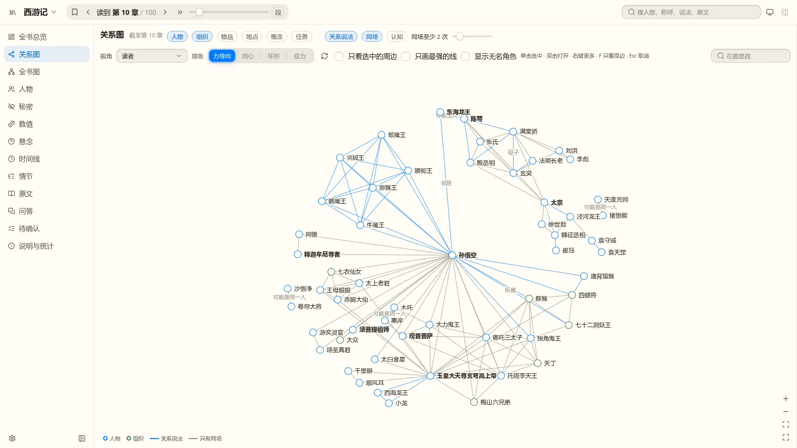
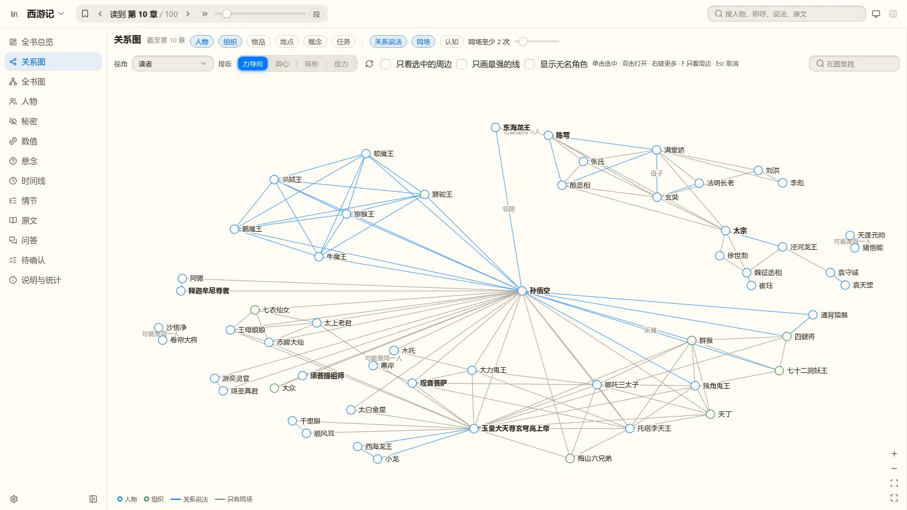
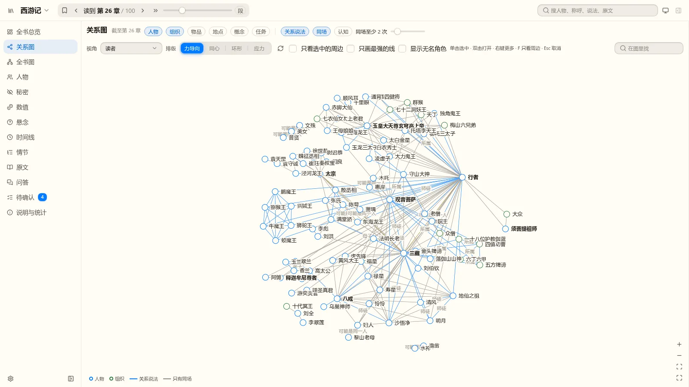
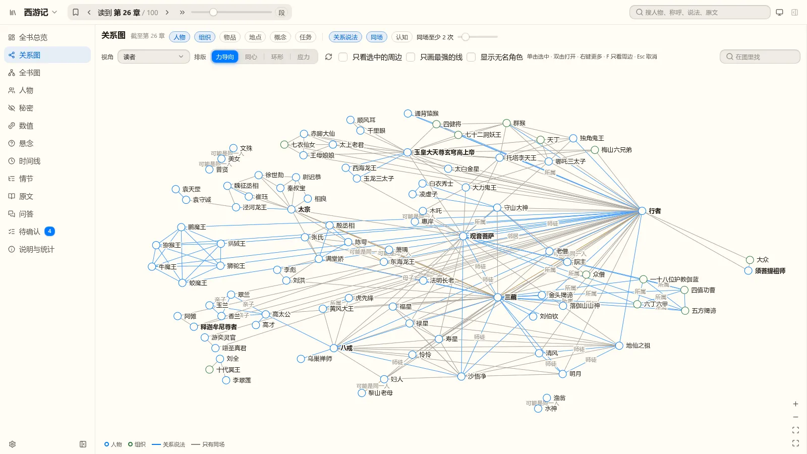
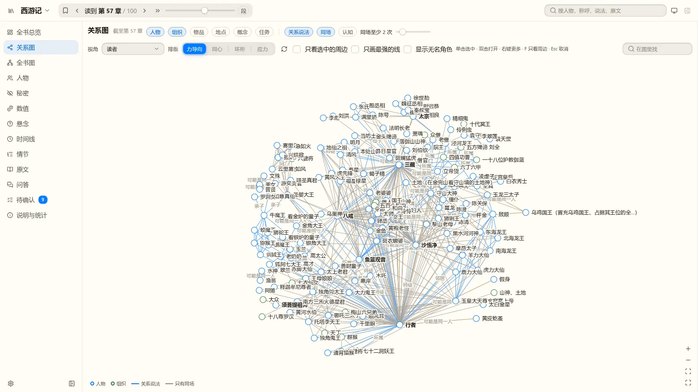
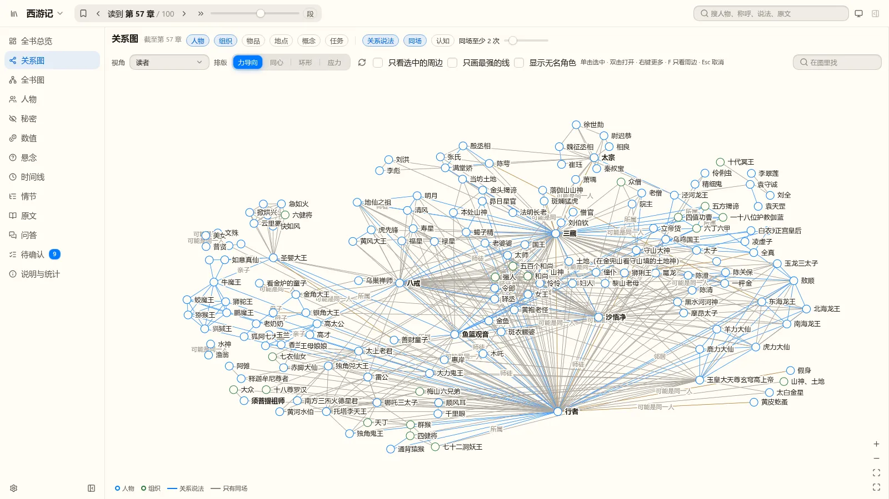
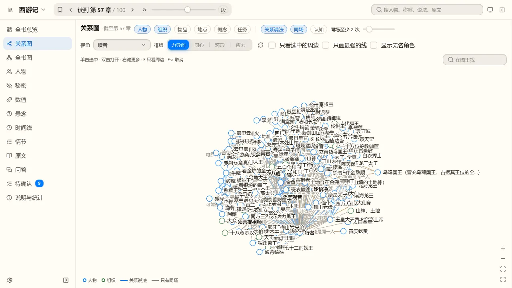
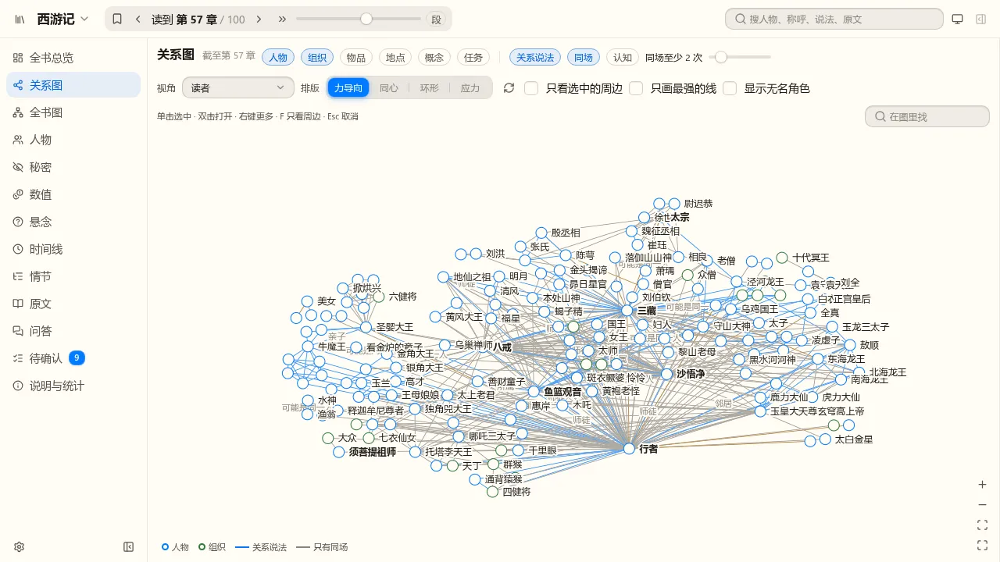

同一份数据（第二版《西游记》，读者视角，人物与组织，默认“力导向”），同一个浏览器窗口，左边是现在 master 的画面，右边是新排版。点的画法、线的粗细、颜色都没动。
| 章 | 点数 | 现在：图占画布 | 现在：名字框重叠（对） | 新：图占画布 | 新：出名字的点 | 新：名字框重叠（对） |
|---|---|---|---|---|---|---|
| 第 10 回 | 78 | 30% | 38 | 65% | 78 | 0 |
| 第 26 回 | 137 | 27% | 164 | 64% | 133 | 0 |
| 第 57 回 | 225 | 29% | 463 | 65% | 137 | 0 |
| 第 100 回 | 343 | 27% | 2101 | 59% | 135 | 65 |
1280×720 的小窗口里第 26 回名字框重叠 366 对降到 0，第 57 回 1094 对降到 63；手机宽度画布太窄（四周各留 90 像素），名字仍然叠，这次没处理。







